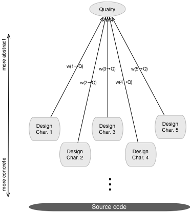

Quality Model
A Quality Model (QM)
is a means of assessing the quality of a software system in terms of
some of its measurable characteristics. Unfortunately, the notion of
“quality” is a ambiguous, meaning that it may refer to many different
aspects. In order to define a useful Quality Model, first we
need to refine the meaning of Quality, decide which aspects of quality
to consider and how to map these to measurable characteristics of a
software system. In general, when applied to software
development, Quality can mean at least three different things:
- External Quality: characterizes a software product
from the point of view of its end-users. Measurable
characteristics of interest would be for example
fitness for a particular purpose, adherence to specifications, ease of
use, performance, etc.
- Process Quality: characterizes a software product
from the point of view of an organization's management. Such a
definition of quality is useful if an organization wants to monitor and
control the effectiveness and efficiency of its resource allocation in
terms of man-power, release cycles, support, etc. Measurable
characteristics of interest would be for example adherence to a
particular formal development process, costs associated with
the development process, developer productivity, etc.
- Internal Quality (also referred to as “design
quality”): characterizes a software product from the point of view of
its developers and maintainers. Such a definition of quality refers to
the degree to which the architecture and design of a software system
lends
itself to further development and maintenance activities. Measurable
characteristics of interest would be for example aspects of size,
complexity and coupling of, or between the components that form the
system.
Naturally, these three distinct views on quality are not
completely independent from one another. For example, a bad internal
quality may be partly the result of a bad process
quality. Moreover, a bad internal quality may lead to the
introduction of more bugs, thus having a negative influence on the
external quality of the product. In the context of software quality
assessment, we consider the notion of quality as in Internal Quality,
in other words the quality of the system’s architecture and design.
Once settled on a common understanding of the
notion of quality, we need to decompose and refine this notion in
successive
iterations, until we reach the level of measurable characteristics.
This is doen in order to narrow the abstraction gap that
exists between what we understand and perceive intuitively, and what we
can actually measure using automated tools. This stepwise refinement is
suggested in the figure below, which shows an example of one such level
of
decomposition: from Quality down to Design Characteristics.

In addition to the actual decomposition, weights need to
be assigned to the various lower level characteristics. These weights are labeled
in the figure using “w(x → Q)”, meaning the weight
associated to the mapping from lower level charactersitic X to the
higher
level notion of quality Q.
The inFusion QM defines two decompositional layers: a layer of Design Characteristics, and a layer of Design Flaws. The first layer is more abstract and corresponds to the high level decomposition
of the QM, while
the second layer is more concrete and corresponds to
the operationalization of the
QM. Once a QM is operationalized, we can use it to compute the Quality Deficit Index, a
quality score which can be used to track the evolution of a
sofwtare system through successive versions.
As explained above, we are
interested in measuring internal system quality using automated tools. The lower layers on the other hand will depend on the
particular types of systems that we analyze. In the case of the
inFusion QM, we need to support both procedural (in the case of a
hybrid system) and object-oriented designs. In the case of a hybrid C/C++ system, the QM must be able
to work with mixed (C/C++) systems in a "fair" way, in other words the
QM must "talk both languages" at the same time, and aggregate the
results in such a way that both the procedural and the object oriented
aspects of such a system are accounted for in the global quality index. In the following, we discuss the way in which
the inFusion QM achieves this goal.
Procedural vs. Object-Oriented Design
Procedural versus object-oriented programming is not
just, or better said, it's not primarily - about some different
language mechanisms that are available in one or the other programming
language. These are two different programming paradigms, that involve
different ways of system structuring, based on a different way of
thinking, with different perceptions of quality, and thus with
different means to achieve design quality. These means are then mapped
in different sets of design principles, design rules and best
practices, by which quality needs to be judged.
On the other hand, they are not two totally separate
worlds. In some aspects, object-orientation builds on top of procedural
programming, and thus many of the quality aspects (size, complexity,
coupling) regarding functions are equally relevant to object-oriented
methods.
Now, there are pure procedural language like C; and there
are also (almost) pure object-oriented language like Java. But, C++ is
a special case: it's not a pure object-oriented language. On the
contrary, C++ is a hybrid language that allows the co-existence of
procedural and object-oriented programming. Therefore, most of the C++
systems are a hybrid between two different programming paradigms and
thus most of the C++ systems have two facets that can be analyzed: the
procedural facet and the object-oriented one (see figure below).
There are at least two frequently encountered situations
that lead to a mixture of object-oriented (pure C++) and procedural
(pure C) code:
- Use of previously developed (usually
low-level) C routines in a project that is predominantly developed in
C++. The case of these systems looks like the second last system
sketched in the figure below.
- Migration to C++ of a
legacy system initially developed in C, where gradually C subsystems
are replaced by object-oriented code (written in C++). These systems
tend to evolve as depicted below, from top to bottom.
As a consequence assessing the quality of a C++ system
requires a quality model that allows QA engineers and developers to
evaluate the quality of both sides of a hybrid C++ system.
The inFusion QM achieves this by operationalizing in
terms of two distinct sets of design flaws: one set applies to pure
object oriented C++ code, while the other applies to pure procedural C
code. In a sense, the upper levels of the QM stand on two pillars: one
for object oriented code and the other for procedural code, as illustrated on the right hand side of the figure above.
When analyzing a hybrid C/C++ system, the two
operationalizations are used together, to separately assess the quality
of the procedural and the object oriented parts of the system. The
balance in the figure suggests that the engineer has total control in
setting the relative weight of the two aspects of quality in the
calculation of
the global quality index.
References
Design Flaws, Quality Concerns,
Quality
Deficit Index